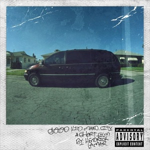

good kid, m.A.A.d city
Man on the Moon II

Get to know me!
Age: 18
Birthday: 21 May 2002
Studies: BSc Computer Science
Nationality: Albanian
My favorite food is Pizza
I enjoy watching and playing football
I used to play semi-pro and I support FC Barcelona
I got introduced to computer science in High-School
My favorite computer game is CS:GO
I have listed below some of my favourite albums and shows
My responsibility was to develop the pages about England
In addition to that I developed the Index page
Furthermore, I designed the navigation of the website
As part of the "HyperTexters" team, my role was to organize the group